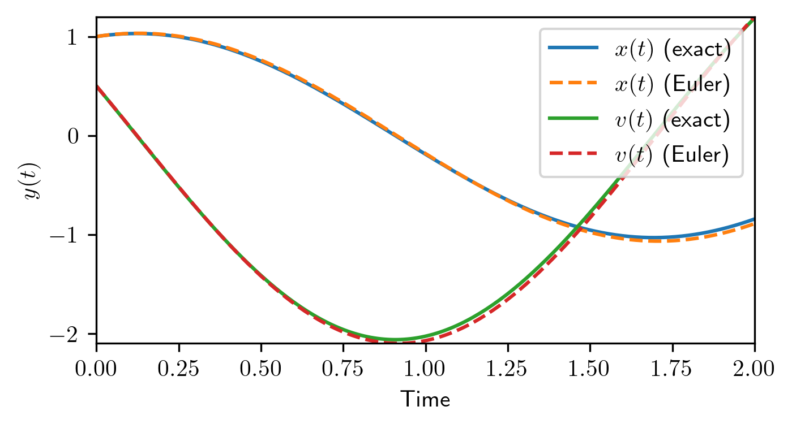

An ordinary differential equation (ODE) is an equation involving functions of one independent variable (for instance, time) and its derivatives. In the simplest scenario, suppose we have an unknown function \(y(t)\). A first-order ODE can be written as:
\[
\frac{dy(t)}{dt} = f\bigl(y(t), t\bigr),
\]
where \(f\) is a known function, and \(y(t)\) is the unknown to be determined. Higher-order ODEs can often be recast as systems of first-order ODEs by introducing additional variables for the higher derivatives.
5.1 General Definition and Examples
To see how ODEs arise in physical scenarios, consider Newton’s second law, \(m\,\frac{d^2 x}{dt^2} = F(x,t)\). This second-order ODE can be reduced to a system of two first-order ODEs by introducing an auxiliary variable for velocity \(v(t) = \frac{dx}{dt}\). Then we have:
In quantum mechanics, the time-dependent Schrödinger equation
\[
i\hbar \,\frac{d}{dt}\ket{\psi(t)} = \hat{H}\,\ket{\psi(t)}
\] can be viewed as a first-order ODE in the Hilbert space: the role of \(\ket{\psi(t)}\) is analogous to \(y(t)\), and \(-\frac{i}{\hbar}\,\hat{H}\) plays the role of \(f(\,\cdot\,,t)\) (assuming a time-independent \(\hat{H}\)). This analogy suggests that the Schrödinger equation can be treated using standard ODE solution techniques or, in more complicated cases, numerical integration.
A linear ODE has the form: \(\frac{d\mathbf{y}(t)}{dt} = A\,\mathbf{y}(t) + \mathbf{b}(t),\) where \(\mathbf{y}(t)\) is a vector function of time, \(A\) is a constant (or possibly time-dependent) matrix, and \(\mathbf{b}(t)\) is a known inhomogeneous term. If \(\mathbf{b}(t) = \mathbf{0}\), the equation is said to be homogeneous.
5.2 Solving Linear ODEs by Diagonalizing the System Matrix
A common case in quantum mechanics and in classical physics is the linear homogeneous system:
where \(A\) is a constant \(n\times n\) matrix, and \(\mathbf{y}_0\) is the initial condition.
5.2.1 Eigenvalue Decomposition
If \(A\) is diagonalizable, we can write: \[A = V \, D \, V^{-1},\] where \(D\) is a diagonal matrix whose entries are the eigenvalues \(\lambda_i\) of \(A\), and the columns of \(V\) are the corresponding eigenvectors. Define: \[\mathbf{z}(t) = V^{-1}\,\mathbf{y}(t).\] Then, plugging this into Equation 5.1, we get
\[
\frac{d\mathbf{z}(t)}{dt}
= V^{-1}\, \frac{d\mathbf{y}(t)}{dt}
= V^{-1}\, A\, \mathbf{y}(t)
= V^{-1}\, (V \, D \, V^{-1})\, \mathbf{y}(t)
= D \, \mathbf{z}(t).
\]
Hence, in the \(\mathbf{z}\)-coordinates, the system becomes a set of \(n\) uncoupled first-order ODEs:
\[
z_i(t) = z_i(0)\,e^{\lambda_i t}.
\] To enforce the initial condition \(\mathbf{y}(0) = \mathbf{y}_0\), we note that \(\mathbf{z}(0) = V^{-1}\,\mathbf{y}_0\). Hence, transforming back, we get:
where \(\mathbf{v}_i\) are the eigenvectors of the matrix.
5.2.2 Relation to the Schrödinger Equation
When dealing with the time-dependent Schrödinger equation for a time-independent Hamiltonian \(\hat{H}\), we can represent \(\ket{\psi(t)}\) in a certain basis, turning the Schrödinger equation into:
\[
i \hbar \,\frac{d}{dt} \mathbf{c}(t) = H \,\mathbf{c}(t),
\]
or equivalently,
\[
\frac{d\mathbf{c}(t)}{dt} = -\frac{i}{\hbar} \, H \,\mathbf{c}(t).
\]
We can identify \(A = -\frac{i}{\hbar}\, H\). If \(H\) is diagonalizable (e.g., Hermitian matrices always have a complete set of orthonormal eigenvectors), then the above solution technique via diagonalization applies. The resulting exponential solution corresponds to the usual \(e^{-\frac{i}{\hbar} H t}\) operator that defines unitary time evolution in quantum mechanics.
Example: Harmonic Oscillator
The harmonic oscillator is described by the second-order ODE:
\[
\frac{d}{dt} \begin{pmatrix} x \\ v \end{pmatrix} = \begin{pmatrix} 0 & 1 \\ -\omega^2 & 0 \end{pmatrix} \begin{pmatrix} x \\ v \end{pmatrix}.
\]
By diagonalizing the matrix, we can find the solution to this system.
import numpy as npomega =2.0# Define the 2x2 matrix AA = np.array([[0.0, 1.0], [-omega**2, 0.0]])# Initial condition: x(0) = 1, v(0) = 0.5x0 = np.array([1.0, 0.5])# Diagonalize Aeigs, V = np.linalg.eig(A)V_inv = np.linalg.inv(V)z0 = V_inv @ x0# Define a time arrayt_points = np.linspace(0, 2, 200)X_t = []for t in t_points:# Compute the solution at time t z_t = np.diag(np.exp(eigs * t)) @ z0 x_t = V @ z_t # Transform back to original coordinates X_t.append(x_t)X_t = np.array(X_t).realprint("x(2) = ", X_t[-1])
x(2) = [-0.84284424 1.18678318]
We have: - A: the system matrix. - y0: initial condition \(\mathbf{y}(0)\). - We diagonalize \(A\) to find \(A = V D V^{-1}\). - Then \(\exp(A t) = V \exp(D t) V^{-1}\).
If you run the code, you’ll see the final value of \(\mathbf{y}(2)\).
We could also visualize the time evolution:
In many realistic situations (e.g., time-dependent Hamiltonians, nonlinear effects, large dissipative systems described by master equations), finding an exact analytic solution can be very challenging or impossible. We then rely on numerical methods to solve ODEs.
5.3.1 Forward Euler Method
One of the simplest methods is the forward Euler method. Suppose we want to solve: \[
\frac{d\mathbf{y}(t)}{dt} = \mathbf{f}(\mathbf{y}(t), t),
\quad
\mathbf{y}(0) = \mathbf{y}_0.
\]
We discretize time into steps \(t_n = n\,h\) with step size \(h\). The Euler method approximates the derivative at \(t_n\) by a difference quotient:
with \(\mathbf{y}_0\) known. After iterating this rule for \(n=0,1,2,\dots\), we obtain an approximate solution at discrete times \(t_n\).
5.3.2 Stability Criterion for the Euler Method
While the Euler method is straightforward, it can be susceptible to numerical instability when the system has rapidly decaying or oscillatory modes. For example, consider the test equation \(\frac{dy}{dt} = \lambda\, y,\) where \(\lambda\) is a (possibly complex) constant. The exact solution is \(y(t) = y(0)\,e^{\lambda t}\). In the Euler scheme, we get
For the method to be stable (i.e., for \(y_n\) to remain bounded in the limit \(n\to\infty\) when the exact solution is stable), we require: \[|1 + h\,\lambda| < 1,\] when the real part of \(\lambda\) is negative (dissipative system). If this condition is not met, the numerical solution may diverge even though the true solution decays exponentially. In practice, one must choose the time step \(h\) small enough to satisfy such stability constraints.
Example: Harmonic Oscillator with Euler Method
Let’s now implement the forward Euler method for a simpler ODE. Consider the same harmonic oscillator, Euler’s method approximates the evolution as:
h =0.01X_t_euler = np.zeros((len(t_points), 2))X_t_euler[0] = x0for n inrange(len(t_points) -1): X_t_euler[n+1] = X_t_euler[n] + h * A @ X_t_euler[n]fig, ax = plt.subplots()ax.plot(t_points, X_t[:, 0], label="$x(t)$ (exact)")ax.plot(t_points, X_t_euler[:, 0], label="$x(t)$ (Euler)", linestyle='--')ax.plot(t_points, X_t[:, 1], label="$v(t)$ (exact)")ax.plot(t_points, X_t_euler[:, 1], label="$v(t)$ (Euler)", linestyle='--')ax.set_xlabel("Time")ax.set_ylabel("$y(t)$")ax.legend()plt.show()

Here we see how the Euler solution compares to the exact solution obtained via diagonalization. Notice that using a large time step \(h\) can cause the Euler solution to deviate significantly from the exact decay (and may even diverge if \(|1 - \lambda h| \ge 1\)).
5.4 Applying These Methods to the Schrödinger Equation
Time-Independent Hamiltonian
For a time-independent Hamiltonian \(\hat{H}\), the Schrödinger equation in vector form reads:
By setting \(A = -\tfrac{i}{\hbar} H\), we recognize that this is a linear ODE. If \(H\) (or \(A\)) is diagonalizable, its eigen-decomposition yields an analytic solution. In quantum optics, these solutions describe unitary time evolution of a closed system, often expressed as:
When \(\hat{H}(t)\) varies explicitly with time, one no longer has a simple exponential solution. Instead, one can divide the time interval of interest into many small sub-intervals and approximate \(\hat{H}(t)\) as constant in each interval. This procedure is related to the time-ordered exponential, but from a numerical perspective, we can simply implement a step-by-step integration (e.g., Euler, Runge–Kutta, or other higher-order methods) to construct \(\ket{\psi(t_{n+1})}\) from \(\ket{\psi(t_n)}\).
5.4.2 Open Quantum Systems
In open quantum systems, the evolution of the density matrix \(\rho(t)\) is often governed by the master equation:
\[
\frac{d\rho(t)}{dt} = \mathcal{L}[\rho(t)],
\] where \(\mathcal{L}\) is the so-called Liouvillian superoperator, which could contain both Hamiltonian (coherent) parts and dissipative terms. Numerically, one can vectorize\(\rho(t)\) (flattening the matrix into a vector) and represent \(\mathcal{L}\) as a matrix \(\mathcal{L}_{\mathrm{mat}}\). Then, the equation again has the familiar linear form:
Hence, the same techniques (matrix diagonalization for analytical solutions, or time stepping methods like Euler, Runge–Kutta, etc. for numerical solutions) remain valid.
5.5 Conclusion
In summary:
An Ordinary Differential Equation (ODE) involves a function of one variable and its derivatives.
When an ODE is linear and time-independent, one can analytically solve it by diagonalizing the system matrix.
For more complicated (time-dependent or nonlinear) problems, numerical integration methods such as the Euler method can be applied.
The Euler method is conceptually simple but demands careful choice of time step to ensure stability, particularly when the system matrix has eigenvalues with large negative real parts or when fast decaying/oscillatory modes are present.
These ideas are directly applicable to quantum mechanical systems such as the Schrödinger equation or master equations for open systems. In the Schrödinger equation, diagonalization corresponds to finding energy eigenstates and frequencies, while in open quantum systems, vectorization plus diagonalization or numerical iteration handles both coherent and dissipative dynamics.
Throughout the course, we will leverage these fundamental methods—both analytical techniques (e.g., diagonalization) and numerical approaches (e.g., Euler and more sophisticated solvers)—to simulate quantum systems efficiently and accurately.